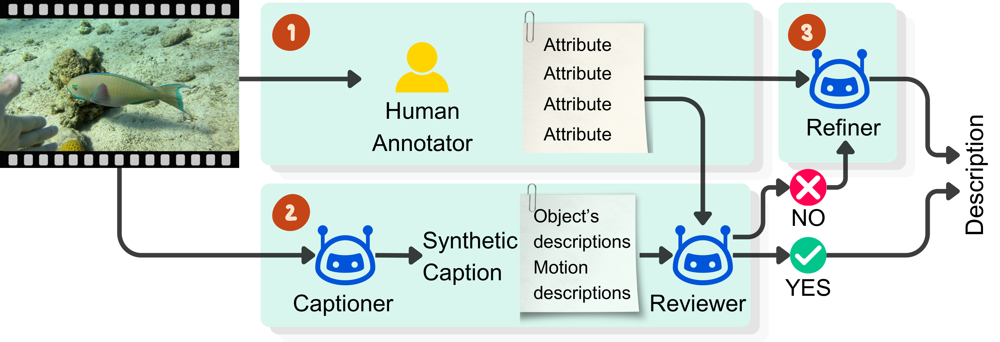
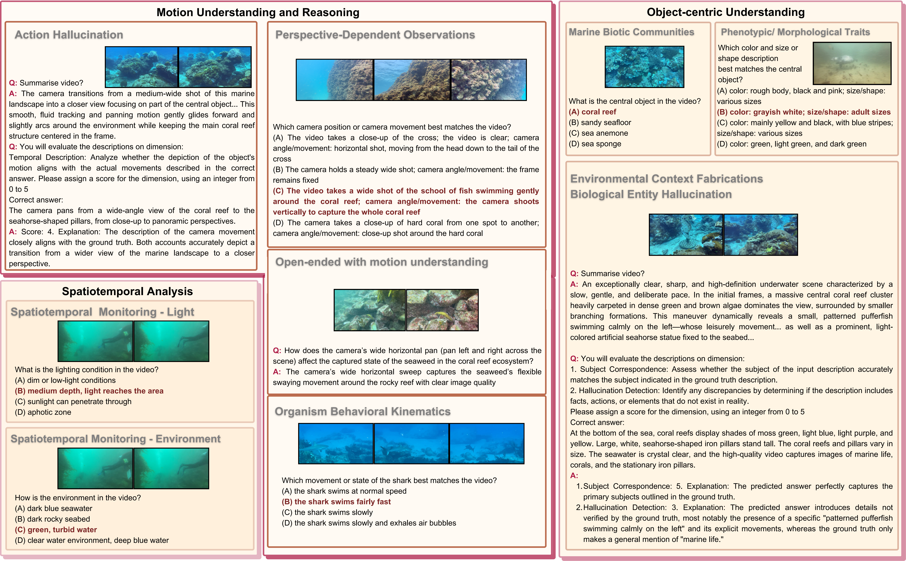
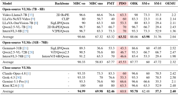
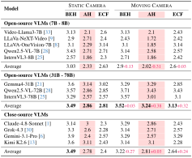
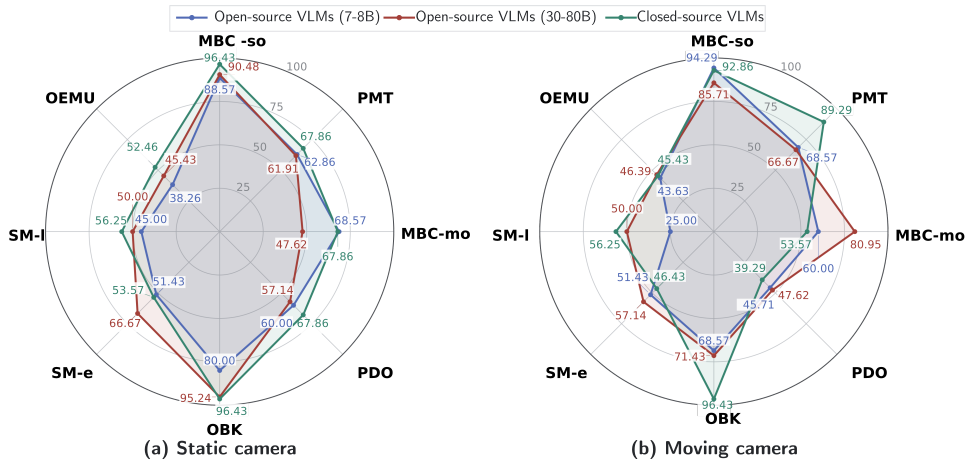

MarineLife-16K: An Attribute-Rich Video-Text Dataset for Motion-Aware Marine Video Understanding
IEEE/CVF Winter Conference on Applications of Computer Vision 2027 (WACV 2027)
- Video–text pairs
- 2,000
- Visual & motion schema
- 13 Attributes
- Benchmark VQA questions
- 16,080
Abstract
Marine video understanding is crucial for a wide range of real-world applications. However, existing marine video datasets suffer from limitations, including the limited number of data samples, fine-grained text descriptions, and detailed visual attributes. Visual attributes—capturing appearance (color, texture) and geometry (shape, size)—comprise a significant portion of scene information, yet they are often confounded by camera motion. To address these limitations, we introduce a large-scale, video-text dataset featuring rich, in-the-wild visual attributes tailored for complex marine environments.
Our dataset comprises 2,000 video-text pairs annotated with 13 attributes covering up to four objects per scene, object visual/geometric properties, behaviors, environmental context, and camera motion, spanning diverse lighting conditions, times of day, and 7 countries. From these annotations, we generate 16,080 video-question pairs (12,080 multiple-choice, 4,000 open-ended).
Furthermore, we benchmark both proprietary and open-source video-LLM models on video question answering and video captioning tasks. We find that: ❶ Proprietary models often achieve superior performance. ❷ VLMs handle object motion well but struggle with complex camera motion. ❸ Closed-source models struggle to perceive camera motion. ❹ VLMs struggle to reason in static cameras.
Data Examples
Interactive video sample details
This video could not be loaded. Try another sample or reload the page.
CAPTION
The video shows an adult sea turtle with an olive-brown oval scute-patterned shell, speckled pale head, and broad flippers swimming over coral mounds, rocky ledges, distant fish, and clear sunlit blue reef water; the turtle glides slowly, with a following side camera position and horizontal camera angle.
Sample annotations
Subject & appearance
- Central object
- Sea turtle
- Texture and pattern
- Brownish-black with white spots; white with black dots
- Color
- Brown
- Size and shape
- Adult size
Scene & visibility
- Secondary objects
- Coral reefs and surrounding rocks; diver
- Environment
- Clear blue seawater
- Video quality
- Clear video quality
Object activity
- Motion
- The sea turtle swims at a slow speed
Camera viewpoint & motion
- Camera position
- Stationary wide shot as the sea turtle moves from near to far and back
- Camera angle
- Horizontal angle following the sea turtle
Dataset Pipeline

We introduce a three-stage, human-in-the-loop caption engine that utilizes a multi-agent framework to generate high-quality video captions: ❶ Fine-grained attributes are manually annotated by human experts. ❷ An LMM captioner agent inputs video sequences to generate initial synthetic captions, which a reviewer agent subsequently scores against the human-verified attributes (Sc ∈ [0, 5]). ❸ A refiner agent filters the outputs, correcting low-confidence synthetic captions (τ = 3.5) to ensure factual alignment.
Dataset Statistics

Task Dimensions

Experimental Results



BibTeX
@inproceedings{truong2027marinelife16k,
title = {MarineLife-16K: An Attribute-Rich Video-Text Dataset for Motion-Aware Marine Video Understanding},
author = {Truong, Quang-Trung and Nguyen, Thanh-Nghia and Vo, Phu-Phong and Kim, Jaeyeon and Chen, Cheng and Zhang, Jie and Hua, Binh-Son and Nguyen, Duc Thanh and Tsang, Ivor and Yeung, Sai-Kit},
booktitle = {IEEE/CVF Winter Conference on Applications of Computer Vision (WACV)},
year = {2027}
}